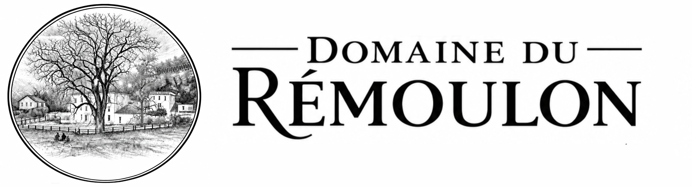

Gîte Grande Capacité, Séminaires, Evènements · Serpaize (38) à coté de Vienne et très proche de Lyon
Domaine du Rémoulon — [votre promesse en quelques mots]
[Présentez votre activité en 2 à 4 phrases : services proposés, public concerné, zone géographique desservie et élément qui vous distingue. Utilisez naturellement les expressions que vos clients rechercheraient.]
☎ 06 14 52 62 07Le site internet est en cours de construction mais le gîte est opérationnel, contactez-nous pour toute demande d'information.